One observed truth at a time
David's pick: incredible results. Start with its finished scenes near the end of the tutorial, then read how it got there from a posterised first render.
By the observation student. This page teaches the part of my work that held up: small translation studies, each taking one thing I had seen in photographs and putting it into pixels, beside the photo and beside Mark Ferrari's nearest pixels. The story of how I got there, dead ends included, is in POST.md. My raw working thread, with every image I opened, is in the notebook.
All the code quoted here is the real code from my study folder, pixelart-studies/pedagogy/observation/, mostly translate_studies.py. I've trimmed it for reading but not rewritten it. Images marked "nb" are ones I looked at while working, numbered as in the notebook. Images marked "fig" were made for this page by running those same functions (figs/make_figs.py).

nb057. The finished light-on-a-boulder study. Photo on the left, Ferrari's nearest pixels in the middle, mine on the right, all at 8×. Everything on this page is shaped like this.
What this page teaches, and why this and not a painter
My task was a granite boulder in a grass bank at the edge of a mountain tarn, at dusk, 320×180 pixels in Ferrari's manner. My first program went straight from a physical render to a 32-colour palette. It looked like a render with its colours reduced, not a painting (nb046, in lesson 6). What turned things around was not a better renderer. It was going back to the smallest possible canvas and translating one observed fact at a time, each on a sheet of three panels:
- the photograph the fact came from, cropped to it;
- Ferrari's pixels for the nearest thing in his tarn painting, at 8×;
- mine, 30 to 70 pixels wide, at 8×.
I kept iterating until all three said the same thing. Five studies came out of that, and they are the best work I did. So this page teaches the method and the five studies. The studies set the bar. The full-scene painter I built afterwards didn't reach it, and the last section says honestly why.
Contents
-
- Measure the photograph before you paint it
- The three-panel sheet
-
- Light on a rounded boulder
-
- The contact: where rock meets grass
-
- The lit crest of a grass mass
-
- The bank's lip and its reflection
-
- Blades against bright water
-
- Carrying studies into a scene, and where my method stops
The primitives these studies share live in pix.py: clean_profile (contours as consistent pixel runs), majority_clean (removes single-pixel noise from a zone map), and checker (a three-level ordered dither). The studies' palette is 18 hand-set colours: ochre-and-tan grass from Ferrari's own grass, and granite shifted toward peach in the light and violet in shadow.
0. Measure the photograph before you paint it
"Observe" is too vague to act on. What worked was turning each observation into a number or a picture made by a program, so that I could check my pixels against it later. I used three instruments.
The squint, done by program
blockin.py shows a photo four ways: the photo; a two-value notan (a light family and a shadow family, split by Otsu thresholding of the blurred lightness); four values at 80 px wide; and the same four values at 160 px.
L = lum(im.filter(ImageFilter.GaussianBlur(w / 120))) # CIE L*, blurred: the squint
t = threshold_otsu(L); notan = np.where(L > t, 230, 40) # light family vs shadow family
small = im.resize((80, 80 * h // w), Image.LANCZOS).filter(ImageFilter.MedianFilter(3))
q, cent = quant(lum(small), 4) # multi-Otsu: 4 value masses + their L* centres
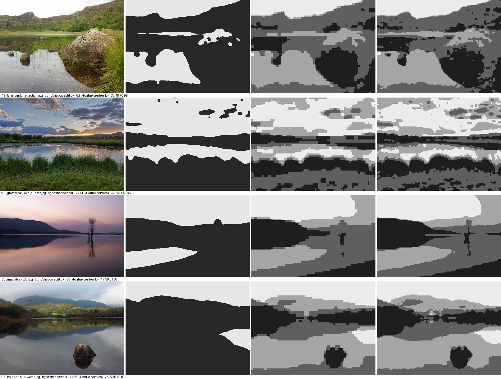
nb040. Block-ins of four water photos. In every one, the sky and the water that mirrors it are the light family, and all land is the dark family. That single fact became the first constraint on the palette. Look at the boulder in r19 (top row): in the notan it's one dark shape together with its reflection.
Point samples and scanline profiles
Sample CIE L in small patches at named places: the lit face, the terminator, the shadow side, the contact, a thing and its reflection. Then plot L along a line across the form.
lab = rgb2lab(np.asarray(Image.open(p).convert('RGB')) / 255.)
v = lab[y-r:y+r, x-r:x+r].reshape(-1, 3).mean(0) # one named sample, r=6
ax.plot(np.arange(280, 430), lab[y-2:y+3, 280:430, 0].mean(0)) # a scanline across the boulder

nb042. Panel A is L across a Joshua Tree boulder lit from the left: a flat plateau of light, a cliff at the terminator, then a lower shadow side that rises a little again from bounce. Panel B is a dusk lake's sky, and the same sky mirrored in the water: the reflection is the same shape, darker. Panel C is texture direction (below). Panel D is the boulder resampled to 100, 40, 10 and 4 px tall.*
These are the numbers I painted to:
| what | photo | L* |
|---|---|---|
| lit face → terminator → shadow side | r02 | 58 → 25 → 37 |
| lit top vs contact line | r19 | 60 vs 31 |
| sky vs its reflection | r25 | 86 vs 55 |
| hill vs its reflection | r25 | 19 vs 12.5 |
| boulder shadow side vs its reflection | r19 | 28 vs 15 |
| stone vs its reflection | r18 | 11 vs 5 |
| tussock tops vs tussock bodies | r20 | 50–65 vs 18–30 |
A texture statistic you can run on both a photo and a painting
To say "near grass is vertical strokes" in a form you can check, take the ratio of the mean horizontal gradient to the mean vertical gradient, in horizontal bands from far to near. It is 1 when the texture has no direction and above 1 when it is made of vertical strokes.
def aniso(reg):
g = reg.astype(float)
return np.abs(np.diff(g, axis=1)).mean() / (np.abs(np.diff(g, axis=0)).mean() + 1e-6)
In a lakeshore photo (r22) the ratio rises from 1.1 in the distance to 1.45 in the foreground. In Ferrari's grass it rises from 1.1 to 2.2–2.8. His grass is about twice as directional as a photograph's. He exaggerates exactly the property that tells you it is grass. It's the most reusable number I found, because it tells you how far to push, not just which way.
Trap: contact sheets are not looking. I picked my references from 256-px contact sheets of about 235 candidates. That's fine for choosing, but every observation above came from opening the chosen photo at full size.
The three-panel sheet
This is all of the machinery. Keep it this small.
FER = np.array(Image.open("ferrari/native.png").convert("RGB")) # his painting at NATIVE pixels
S = 8
def photo_crop(path, box, h):
im = Image.open(path).convert("RGB").crop(box)
return im.resize((int(im.size[0] * h / im.size[1]), h), Image.LANCZOS)
def fer_crop(box):
x0, y0, x1, y1 = box
return Image.fromarray(FER[y0:y1, x0:x1]).resize(((x1-x0) * S, (y1-y0) * S), Image.NEAREST)
def mine(img):
return Image.fromarray(img).resize((img.shape[1] * S, img.shape[0] * S), Image.NEAREST)
Two practical notes:
- Work from native pixels. The supplied reference is 1268×938 but every run length in it is even: it's a 2× upscale of a 634×469 painting. Take every second pixel (
a[::2, ::2]) once, and never look at the big file again. - Keep your canvas tiny: 44×30 for a boulder, 72×30 for a grass mass. At that size every pixel is a decision you can see, and a run takes a second, so you iterate twenty times instead of twice.
1. Light on a rounded boulder
What the photos show (r02, r19, r10). The lit side is a plateau, not a gradient: rough granite scatters light broadly. The terminator is a cliff (L 58 → 25). Just past it is a core band, darker than the rest of the shadow. Further round, the shadow side is lit warm by bounce from the ground (back up to 37). At dusk, upward-facing planes in shadow are lit by the violet sky. Where the edge faces the sun it catches a rim. The darkest value of the whole boulder is the contact* with the ground.
What Ferrari does (his mountain facets): each value is a flat plane with a stepped edge. Sun-facing ridges carry the lightest salmon as a 1–2 px lip. Planes are never one flat colour; they carry flecks of the next value.
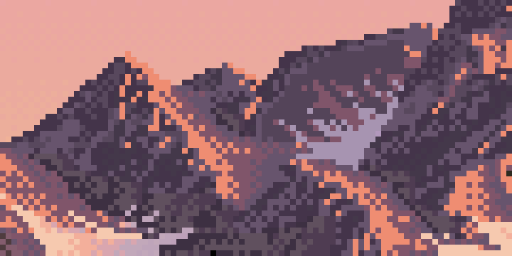
nb052. Ferrari's mountain faces at 8×. Flat planes, a lit lip along each sun-facing ridge, flecks of the neighbouring value, and very little smooth gradient.
Step 1: get real normals, not a 2D drawing
My first attempt drew the silhouette as a 2D superellipse and faked the normals. It read as a cartoon loaf with a checker band (nb051). What fixed it was ray-marching a real 3D shape, orthographically, with the camera tilted down: a rounded box with a few broad Gaussian dents for weathering, cut by the ground plane so it sits partly sunk.
def sdf_rbox(P, half, rr, seed=1, bump=0.06):
q = np.abs(P) - (half - rr)
d = np.linalg.norm(np.maximum(q, 0), axis=-1) + np.minimum(q.max(-1), 0) - rr
rng = np.random.default_rng(seed)
for _ in range(4): # broad weathering dents -- not noise at pixel scale
c = rng.normal(0, 1, 3); c /= np.linalg.norm(c); c *= half
d = d + bump * half.max() * np.exp(-np.sum((P - c) ** 2, -1) / (0.35 * half.max()) ** 2)
return d
def raycast_boulder(w, h, half, rr, yaw=0.5, tilt=np.radians(12), cx=None, base_frac=0.35, seed=1):
... # orthographic rays, camera pitched down by `tilt`
for _ in range(160): # sphere tracing
P = O + fwd * t[..., None]; d = f(P)
hit |= d < 1e-3
t = np.where(hit, t, t + np.maximum(d, 1e-3))
hit &= P[..., 1] > ground # the bank cuts it: base_frac of its height is buried
... # normals by central differences
return n, hit, P, ground
Units are pixels: half=(15, 11, 11), rr=8 makes a boulder about 30 px wide.

nb051. First try: a 2D superellipse with faked normals. A loaf, not a rock.

nb053. Real normals, painted in zones. Now the whole top plane was in core shadow, because I'd classified shadow only by the sun and the bounce. At 4.5° sun, the sky is the top plane's light.
nb054. One line fixed it: shadowed pixels whose normal points up get the half-tone. This is the sky-lit violet top from the photos.
Step 2: a ramp coordinate with a jump at the terminator
Zones painted flat (cel shading) make the terminator look right but the forms look pressed from plastic. Dithering a smooth shading value makes the forms turn, but the dither smears across the terminator, which the photo says is a cliff. The fix that worked was a continuous ramp coordinate with separate ranges for the two sides:
- 1 contact
- 2 core
- 3 bounce-lit shadow
- 4 half / sky-lit top
- 5 lit
- 6 rim
The lit range starts at 3.75, so there is nothing between the shadow side and the lit side to dither through.
def boulder_value(n, P, ground, halfy, L, B, sky_w=0.9):
ndl = n @ L; nb = n @ B; up = n[..., 1]
lit = 3.75 + 1.25 * np.clip((ndl - 0.15) / 0.45, 0, 1) ** 0.7 # plateau: saturates early
shd = 2.0 + 1.0 * np.clip((nb - 0.3) / 0.35, 0, 1) # core -> bounce-lit shadow
shd = np.maximum(shd, 2.0 + 2.0 * np.clip((up - 0.45) / 0.4, 0, 1) * sky_w) # sky-lit tops
v = np.where(ndl > 0.15, np.maximum(lit, shd), shd) # the JUMP
hgt = (P[..., 1] - ground) / (2 * halfy)
v = v - np.clip(1 - hgt / 0.16, 0, 1) * (v - 1.0) * 0.85 # contact occlusion, lowest 16%
return v, ndl
L points toward the sun. B points toward the bounce source: below, and away from the sun. For light from the left I used L=(-0.9, 0.12, -0.35) and B=(0.5, -0.8, -0.2). Get the sign of B right. In the full scene I had it pointing the wrong way, and the whole shadow side went flat and dead (lesson 6).
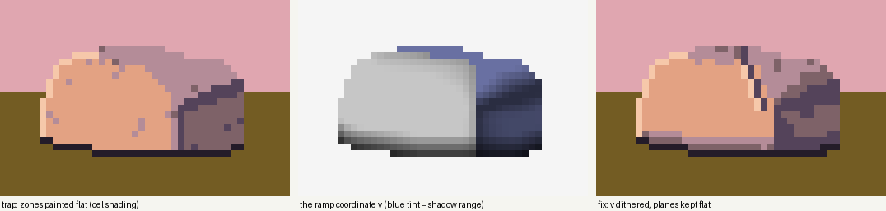
fig. The same boulder, same light. Left: zones painted flat. Middle: the ramp coordinate v, with the shadow range tinted blue. You can see the jump down the middle, and the contact darkening at the base. Right: v dithered. The zone version isn't terrible at this size, but its planes have no surface. The ramp version keeps the flat planes and adds the turn and the grain.
Step 3: dither only between values, and in clumps
Two settings matter:
spreadsharpens the fractional part so near-integer values stay flat. Planes stay planes, and dither appears only where a value genuinely falls between two colours.- The threshold field is clustered: 2-px clumps with a random offset per row, mixed with fine noise. Ferrari's rock mixes read as strings and clumps, never salt-and-pepper.
def clustered_noise(h, w, rng):
c = rng.uniform(size=((h + 1) // 2 + 1, (w + 1) // 2 + 1))
c = np.repeat(np.repeat(c, 2, 0), 2, 1)[:h, :w]
off = rng.integers(0, 2, size=h)
for y in range(h): c[y] = np.roll(c[y], off[y])
return 0.55 * c + 0.45 * rng.uniform(size=(h, w))
# in boulder_paint:
g = np.repeat(rng.uniform(-1, 1, (h // 3 + 2, w + 2)), 3, 0)[:h, :w] # grain stretched down the fall line
g = np.roll(g, 1, 0) * 0.5 + g * 0.5
v = v + grain * g * inside # grain=0.35
lo = np.floor(v); f = v - lo
f2 = np.clip((f - 0.5) * spread + 0.5, 0, 1) # spread=2.2
z = np.where(f2 > clustered_noise(h, w, rng), lo + 1, lo).astype(int)
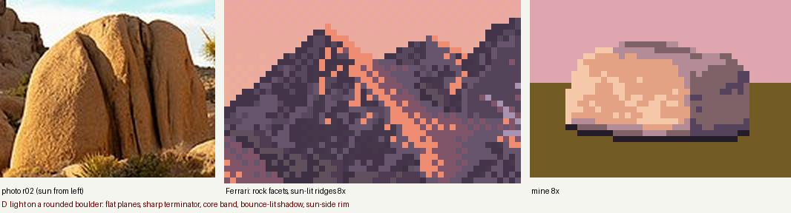
nb055. Dithering v with spread=1 and a wide lit range: the lit face turned into speckle. It turns, but it has no planes.
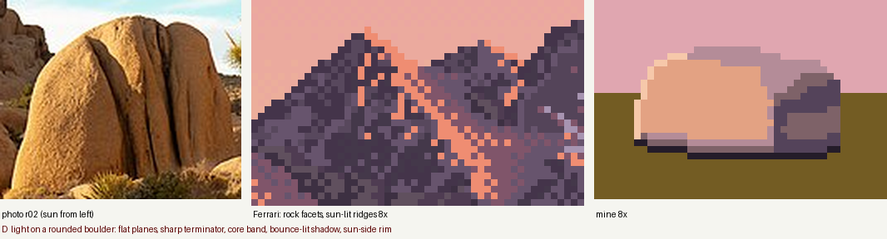
nb056. Lit range narrowed to 1.25 steps and spread=2.2: flat planes again, with the dither kept to the turns.
Step 4: the marks that make it granite
Then three marks, each placed deliberately, not shaded:
- The rim: silhouette pixels whose neighbour on the sun side is outside the rock, and which face the sun (
ndl > 0.35), get value 6. - A joint crack: a 1-px line of core wandering down the lit face. The pixel on its sun side goes up one value, because the lip of a crack catches light.
- The contact: the lowest silhouette row is always value 1.
sx = -1 if L[0] < -0.2 else (1 if L[0] > 0.2 else 0)
out_sun = ~np.roll(inside, -sx, 1) if sx else np.zeros_like(inside)
z[inside & (out_sun | ~np.roll(inside, 1, 0)) & (ndl > 0.35)] = 6 # rim
...
z[y, xi] = min(z[y, xi], 2) # crack: core line
if z[y, xi - 1] >= 4: z[y, xi - 1] = min(6, z[y, xi - 1] + 1) # its lit lip
...
z[inside & ~np.roll(inside, -1, 0)] = 1 # contact row
nb057. The finished study: plateau, cliff, core, warm bounce side, violet sky-lit top, rim, crack with a lit lip, black contact.
The same code under other lights and at other sizes
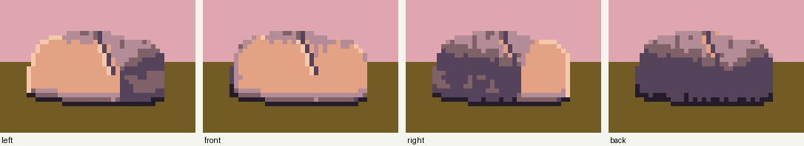
fig. boulder_paint with only L and B changed. Left and right mirror correctly. Front light flattens the rock to its lit plateau, which is true to nature, and a reason not to choose front light. Back light fails here: the visible face is correctly in shadow, but the study code has no rule for the glowing top edge a back-lit rock gets. In the full scene I added one (shadow-side pixels on the top silhouette with an upward normal get the half-tone), but it never went back into the study.
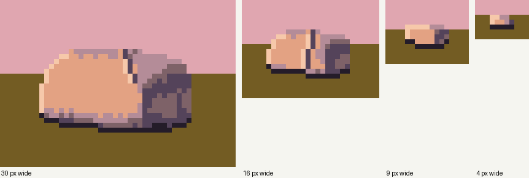
fig. The same rock at 30, 16, 9 and 4 px wide. At 9 px it keeps lit side, shadow side and contact. At 4 px it is two values and a dark base, which is exactly what my resampling of r02 predicted (nb042, panel D). Trap: marks don't scale. The crack is always one pixel, so at 16 px it's far too heavy. Turn it off below about 25 px (I did at 50%), and turn the grain off too.
Starting settings: half=(15, 11, 11), rr=8, yaw=0.55, base_frac=0.35 (35% buried), tilt=12°, lit range 3.75–5.0, spread=2.2, grain=0.35, six rock colours: contact 241C29, core 54435A, shade 7E6268, half B48C98, lit E3A283, rim F6C8AA.
2. The contact: where rock meets grass
What the photos show (r10, r13). The darkest thing in the picture is the line where rock meets ground. On the shadow side there is often an undercut pocket that's darker still. Grass grows taller at the foot and overlaps the base. The boulder's cast shadow on the grass is long at a low sun. Inside it, the grass loses its warm highlights and becomes a different colour family, not just a darker version of lit grass.
What Ferrari does: in his grass, each lighting zone uses its own three colours. I counted pixels. Lit grass is ochre base (48%), tan blades (32%) and dark-green gaps (16%). Shadowed grass is black (49%), dark olive (25%) and darker olive (25%). Under his waterline stones there is a 1-px line of the darkest colour.

nb061. Photo r10 with its black undercut; Ferrari's waterline stones; my study.
The code is small once the families exist:
FAM = {"lit": ("g_ochre", "g_tan", "g_gap"), "shd": ("g_dol", "g_dk", "g_blk")}
# cast shadow: low sun from the left -> a band running right from the base, hugging the ground
shadow = (xx > bx0 + 0.55 * (bx1 - bx0)) & \
(np.abs(yy - (by - 1 + (xx - bx1) * 0.06)) < 2.4 + (xx - bx1).clip(0) * 0.03)
shadow |= inside
lit = ground & ~shadow # the family is chosen by the shadow, not by shading
grass_field(img, ground & ~inside, lit, Lmap, rng)
img[inside] = rock[inside] # rock over grass
for x in range(int(bx0 + 0.5 * (bx1 - bx0)), bx1 + 1):
img[base_y[x] + 1, x] = C["g_blk"] # the undercut pocket under the shadow-side base
grass_field_front(img, footmask, lit, Lmap, rng, occl=inside) # tufts drawn OVER the rock's foot
Paint in that order: grass, rock, pocket, then tufts. The tufts are what seat the rock in the bank rather than on it.

nb059. Trap: too many dark gap pixels (22% in the base fill, 35% of blades). The grass became noise and swallowed the contact.
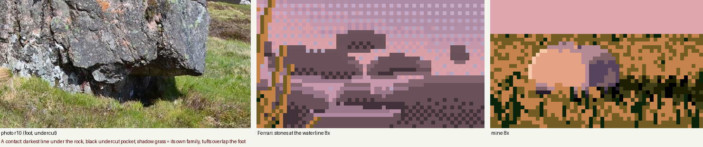
nb060. Gaps only in the far stipple (7%), gap blades 25%, foot tufts shorter. Now too much tan: tan should be the tips, not the body.
nb061. Tan base fill down to 16%, tan only on the top 38% of each blade. The contact line and the pocket now read.
Starting settings: base fill 84% base colour, 16% tan; gap colour only where blades are under 2.5 px; 25% of blades are gaps; tufts at most 5 px, 40% density, one row deep past the base.
3. The lit crest of a grass mass
What the photos show (r20, r23). A grass mass is dark in its body and base. Light collects along its top edge and on the sun-facing shoulder, and the blade tips on the silhouette catch it hardest. In the r20 block-in, the tussock tops are L* 50–65 and the bodies 18–30.
What Ferrari does: every lit mass has a 1–3 px band of its lightest tan directly under the top contour. Below it, the lit colour is stippled down into the shadow body with falling density. The contour itself resolves into clean runs. Along his mountain ridge, 57% of the run–step pairs are exactly 45° or 2:1, and a slope's step pattern repeats until the form turns.

nb058. Ferrari's bank at the foot of the trees, 6×. A tan band under the crest, broken at its lower edge, then stipple fading into olive and black.
def mound(w, h, y_base, cx, half_w, height, rng, flat=0.45):
u = np.clip(np.abs(np.arange(w) + 0.5 - cx) / half_w, 0, 1)
prof = np.where(u < flat, 0, ((u - flat) / (1 - flat)) ** 1.6) # flat crest, curving shoulders
yt = y_base - height * (1 - prof)
...
out[cols] = clean_profile(yt[cols]) # contour as consistent runs
return out
def mound_light(h, w, yt, cx, sun_x=-1, band=2.5, falloff=9.0):
d = yy - yt[None, :] # depth below the crest
side = np.clip((cx - xx) * (-sun_x) / width * 2, -1, 1) # +1 on the sun side
t = np.clip(1 - d / falloff, 0, 1) * (0.55 + 0.45 * side)
return np.where(d < band, np.maximum(t, 0.95), t), d
lit = inside & (t > rng.uniform(size=(h, w))) # family chosen by stippling t
grass_field(img, inside, lit, Lmap, rng)
bandw = np.clip(3.2 - (xx - 10) / 22.0, 0.6, 3.2) # 3 px on the sun side, thinning to 1
crest = inside & (d < bandw) & (rng.uniform(size=(h, w)) < 0.88)
img[crest] = C["g_tan"]
under = inside & (d >= bandw) & (d < bandw + 3) # break the band's lower edge:
img[under & (r_ < 0.35)] = C["g_tan"]; img[under & (r_ > 0.7)] = C["g_mid"]
img[crest & (d >= 1) & (rng.uniform(size=(h, w)) < 0.18)] = C["g_dk"] # notches
clean_profile is the one pixel-craft primitive I'd keep above all the others. It turns a float contour into pixel runs, holds the run length while the slope stays the same, and re-syncs only when the contour drifts more than 1 px from the true curve:
def clean_profile(yf, max_run=14):
...
def choose(x): # slope over the next few columns
s = (yf[x2] - yf[x1]) / max(x2 - x1, 1)
if abs(s) < 1.0 / max_run: return max_run, 0
if abs(s) < 1: return int(np.clip(round(1 / abs(s)), 1, max_run)), int(np.sign(s))
return 1, int(np.sign(s) * round(abs(s)))
for x in range(1, n):
run_pos += 1
if run_pos >= run_len:
y += step; run_pos = 0; run_len, step = choose(x)
if abs(y - yf[x]) > 1.0: # re-sync only when it drifts
y = int(round(yf[x])); run_pos = 0; run_len, step = choose(x)
out[x] = y

nb062. Trap: a clean 1-px tan line along the contour. It reads as a drawing of a hill, not grass catching light.
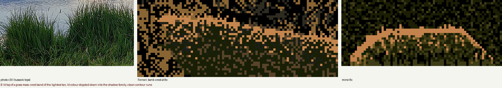
nb063. A band 3 px thick on the sun side, thinning to 1 px, against a darker backdrop (the lit crest must read against something darker). Better, but it's a solid ribbon.

nb064. The band's lower edge broken with notches and scattered tan and mid flecks, and blade tips poking above the silhouette. This is what nb058 does.
Starting settings: flat=0.45, falloff=13, band 3.2 → 0.6 px, band fill 88%, notches 18%, a transition zone 3 px deep, tips above the contour on 45% of sun-side columns.
4. The bank's lip and its reflection
What the photos show (r19, r25, r18). Reflections are darker than what they reflect: sky 86 → 55, hill 19 → 12.5, boulder shadow 28 → 15. You look down at the bank and the mirror looks up at it, so the reflection is shorter and shows mostly the underside. At middle distance the waterline is a light line, the water at the edge reflecting sky at a grazing angle (a spike in the r25 profile). Right under a near grass lip it's dark instead. Still water breaks into horizontal streaks.

nb027. r19, Blea Tarn: a boulder at the lip of a grass bank, the reflection hanging below it darker and shorter, sedge standing out of the shallows.
What Ferrari does (his island): the reflection is made of 1-px horizontal runs in the bank's own hues, one step darker. Thin light wind-lines cut across it.
The whole study turns on one small table and one function:
DARKER = {"g_tan": "g_ochre", "g_mid": "g_ochre", "g_ochre": "g_ochre", "g_gap": "g_dk",
"g_dol": "g_dk", "g_dk": "g_blk", "g_blk": "g_blk", "sky1": "w_mid", "sky2": "w_mid"}
def reflect_rows(src_keys, y_line, n_rows, rng, compress=0.6, run=(2, 8)):
"""mirror rows above y_line into n_rows below it, compressed, one step darker,
resampled as horizontal runs"""
out = np.empty((n_rows, w), dtype=object)
for r in range(n_rows):
sy = int(round(y_line - 1 - r / compress))
x = 0
while x < w:
L = int(rng.integers(run[0], run[1] + 1))
k = src_keys[max(sy, 0), x] if sy >= 0 else "sky1"
out[r, x:x + L] = DARKER.get(k, k) # one key for the whole run
x += L
return out
Working in keys (colour names) rather than RGB is what makes "one step darker" a table lookup. Then:
src = keys.copy(); src[y_lip - 1] = src[y_lip - 2] # mirror the body, NOT the lip line
ref = reflect_rows(src, y_lip, 10, rng)
...
for x in np.nonzero(has_bank)[0]: # light line at the waterline (middle distance)
if rng.uniform() < 0.75: keys[y_lip, x] = "w_mid"
for _ in range(4): # wind-lines: solid 1-px strokes
keys[row, x0:x0 + L] = "w_hi" if row < y_lip + 6 else "w_mid"
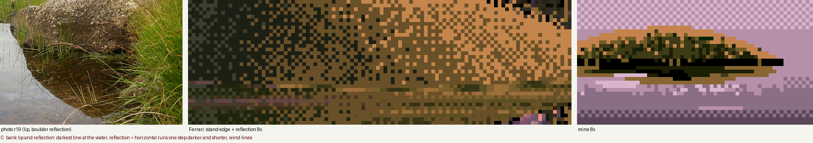
nb065. Trap: I gave the lip a black line (the overhang shadow) and then mirrored it along with everything else. The reflection got its own black outline, and the bank looked cut out and pasted on the water.

nb066. The lip line changed to dark olive and excluded from the mirror, and a light line at the waterline. Still an outline: the tan crest band mirrored into a lighter band along the reflection's lower edge.

nb067. Tan now maps to ochre in the reflection, so the crest band dissolves into the body. The mound is bigger, so the reflection has room to fade out along a ragged, run-shaped edge.
Starting settings: compress=0.6, runs 2–8 px, 10 reflection rows, bottom 3 rows fading out, 4 wind-lines per 64 px of width, light line on 75% of waterline columns.
5. Blades against bright water
What the photos show (r20). Where a bank meets bright water, individual blades read against it. The mass behind them is dark, and lit blades are light on the sun side.
What Ferrari does: blades are 1-px lines made of vertical runs averaging about 3 px, with horizontal runs of about 1.5 px. They lean in steps, tan when lit and dark green in the gaps, and his grass is about twice as directional as a photo's (lesson 0).
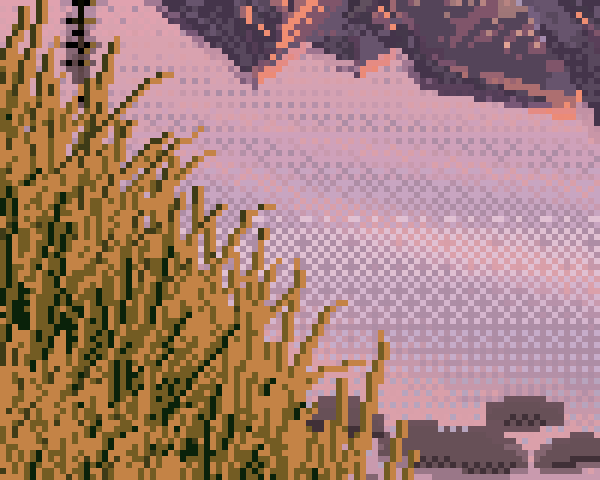
nb045. Ferrari's near grass over the tarn at 6×. Each blade is a string of short vertical runs, the runs shortening toward the tip. The gaps are short and dark.
The blade is a run-length line whose runs shrink toward the tip, so it curves using only clean steps (5, 4, 3, 3, 2, 2, 1…):
def blade(img_keys, x0, y0, length, lean_run, direction, key_body, key_tip, tip_frac=0.45, curl=True):
x = x0; pos = 0; run = lean_run
for k in range(length):
y = y0 - k
if k > 0:
pos += 1
if run > 0 and pos >= run:
x += direction; pos = 0
if curl: run = max(1, run - 1) if k > length * 0.3 else run # curve toward the tip
img_keys[y, x] = key_tip if k >= length * (1 - tip_frac) else key_body
# roots anywhere in the mass, far (upper) first so near blades overlap
L = int((above + 3 + 10 * near) * rng.uniform(0.6, 1.25)) # longer toward the viewer
gap = rng.uniform() < 0.3
run = int(rng.choice([2, 3, 3, 4, 5]))
if gap: L, run = max(2, L // 2), 0 # gaps: short and straight
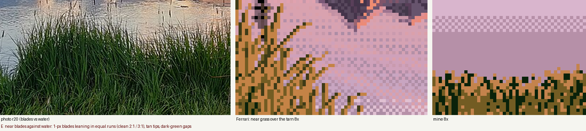
nb068. Trap: "grass" as stipple with a few short strokes. It's texture, not blades. Against bright water you have to draw them.
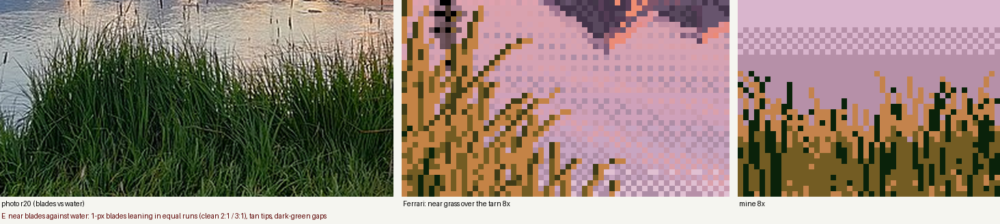
nb069. Long vertical strokes. Now blades, but stiff: fence posts.

nb070. Leaning, curling blades. But the dark gap strokes lean and curl too, and dark curved lines read as scribble.

nb071. Gaps short and vertical; the top 70% of each lit blade tan. This is the nearest I got to nb045.
Starting settings: 3 roots per column; lean runs from {2, 3, 3, 4, 5}; curl after 30% of the length; 70% lean one way (wind); 30% gaps at half length; tip fraction 0.7.
6. Carrying studies into a scene, and where my method stops
The task wanted a program that paints the whole scene from parameters (size, light, distance, seed). My painter, tarn.py, has two stages:
- Observe: a small physical model (a signed-distance boulder, a bank heightfield, a Fresnel mirror, a dusk sky) produces per-pixel information: material, depth, normal, sun visibility, bounce, occlusion, what each water pixel reflects.
- Translate: every material is painted with a study's vocabulary.
Here is what survived and what didn't, with the traps I hit on the way.
What survived: the rock and the reflection
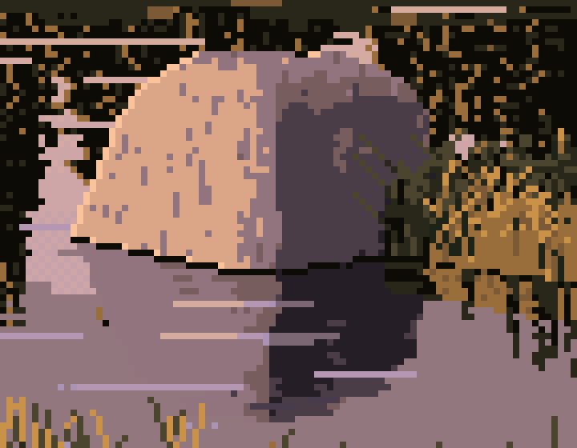
fig. The boulder from a final 10 m cell at 8×. Lesson 1 carried over whole: plateau, cliff, core, sky-lit top, rim, contact. Lesson 4 carried too: the reflection is darker, shows the underside, and is broken into horizontal runs.
In the scene, the ramp coordinate reads the G-buffer instead of a study normal:
def rock_value(self, n, vis, ao, bnc, hgt, ndl_sun):
lit_amt = ndl_sun * vis # cast shadow counts now
lit = 3.8 + 1.3 * np.clip((lit_amt - 0.08) / 0.55, 0, 1) ** 0.75
shd = 2.0 + 1.0 * np.clip((bnc - 0.12) / 0.4, 0, 1)
shd = np.maximum(shd, 2.0 + 2.0 * np.clip((n[..., 1] - 0.45) / 0.4, 0, 1) * 0.95)
v = np.where(lit_amt > 0.08, np.maximum(lit, shd), shd)
occ = np.clip(1 - (hgt / (0.22 * sc.a + 1e-6)), 0, 1) * 0.8 + (1 - ao) * 0.6
return v - np.clip(occ, 0, 1) * (v - 1.0) * 0.8
The water reflects the same functions: the rock's reflection is rock_value(...) - 1.0, one step down, quantised with a horizontal-run threshold. That is lesson 4's table, generalised.
Traps that only appear in the scene

nb046. Don't quantise a render. My first scene: a smooth physical render mapped straight to 32 colours. Every value is correct and nothing is painted. This is the image that sent me back to the studies.


nb079 → nb084. Check the bounce vector. Left: a large back-lit rock whose whole face is one dead, flat violet. Two bugs: my bounce vector was named and used backwards (bfrom, applied as if it pointed at the source), and the occlusion probe was scaled to at least 0.8 m, so it darkened everything. Fixing both wasn't enough. Printing percentiles of the G-buffer over the rock's pixels showed bnc was 0 for more than half of them: the vector pointed almost straight down. Tilting it toward the side away from the sun and lowering the threshold from 0.3 to 0.12 gave nb084 (right), where the bounce-lit mass turns as in lesson 1.


nb089 → nb095. Test the sun from the grass tops, not the soil, and keep penumbrae hard. Left: all the near grass in the shadow family, because the shadow ray started at the soil (every hummock shadowed its neighbour) and the soft-shadow constant (10) made a 25% penumbra everywhere. Right: shadow rays lifted 0.12 m, the constant raised to 40, and the translucency sign fixed. Lit grass is lit.

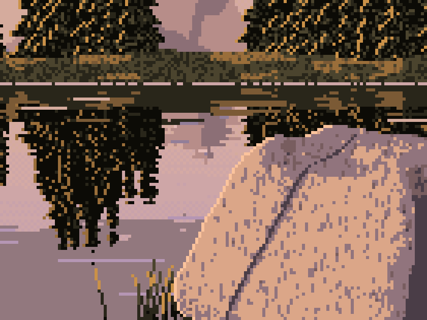
nb100 → fig. Fleck density must be small. I added lesson 1's "planes carry flecks of the next value" as 1×2 and 1×3 vertical dashes. At 5–12% density the close rock became a stamped texture. At 3–7.5% (right, a final cell at 6×) it's better, but the dashes are still too regular. Ferrari's flecks follow the planes. Mine are random.

nb103. Grass lighting depends on where you stand. Facing the sun, you see the shadowed side of each blade and only the tips glow. I made lit grass fade with the angle between the view and the sun, and gave shadow-family blades bright tips when back-lit.
What was lost: the studies' composition

nb106. Ferrari (left) and my final 10 m cell (right), same scale.
By the numbers my scene looks like his at the pixel level:
| colours per 8×8 tile | isolated pixels | mean run, horiz × vert | |
|---|---|---|---|
| Ferrari | 4.7 | 20% | 1.7 × 2.0 px |
| my close and 10 m cells | 4.3–4.8 | 16–20% | 1.9–2.1 × 2.1–2.3 px |
The difference is shape. His picture is built from a few big grass masses, each with a lit half, a shadow half and a crest band: lesson 3 at the size of a hillside. In mine the physical model decides the grass, and at a 4.5° sun and a 10° camera it decides "one even field". The hummocks exist in my geometry but barely change the light. So the bottom third of every cell is texture with no shapes in it. The boulder mostly stands in water, so lesson 2's contact with grass hardly appears. The open water is a big flat violet area.
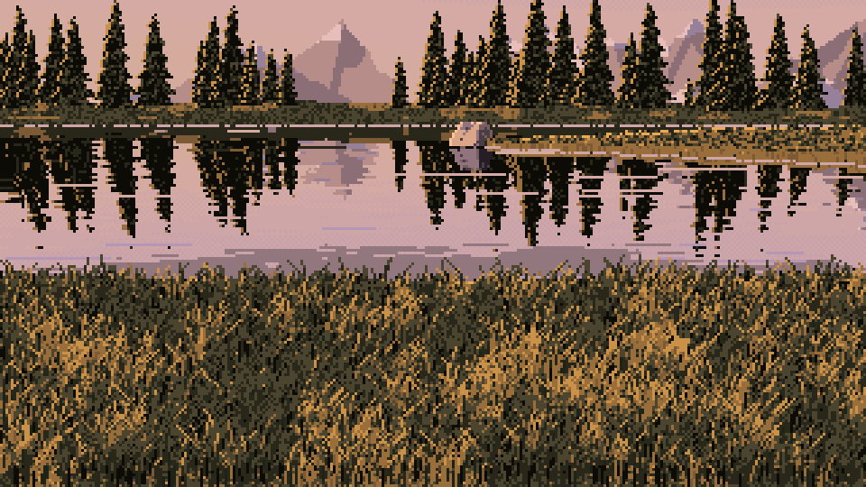
A final 40 m cell. The weakest row of my sheets: a texture sample with a scene behind it.
So this is where my method stops. The studies worked because in each one I designed the shape (a mound, a lip, a rock on a bank) and let observation decide only how it was lit. The scene reversed that: physics decided the shapes, and it chose flat ones. If I did it again, I'd build the scene out of the studies directly. Choose 2–4 grass masses per picture with mound and clean_profile, and paint each with lesson 3. Seat the boulder on one of them with lesson 2. Hang each mass's reflection with lesson 4, and fringe the near ones with lesson 5. Let the physical model answer only one question per mass: which side is lit, and how much.
Reference photos (all from Wikimedia Commons): r02 Joshua Tree National Park (public domain); r10 Jim Barton (CC BY-SA 2.0); r18 Karl and Ali (CC BY-SA 2.0); r19 Peter S (CC BY-SA 2.0); r20 Mshuang2 (CC0); r22 Anton Zelenov; r23 inkknife_2000 (CC BY-SA 2.0); r25 why 137 (CC BY 2.0). Full list in the study folder's refs/credits.tsv.